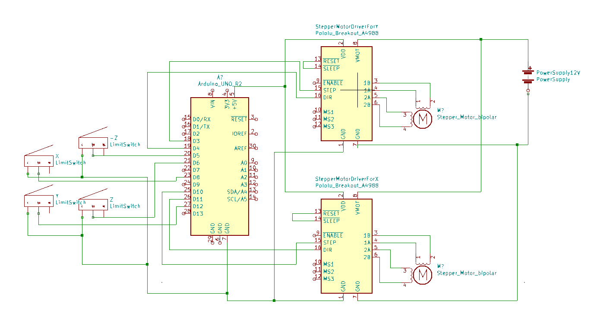
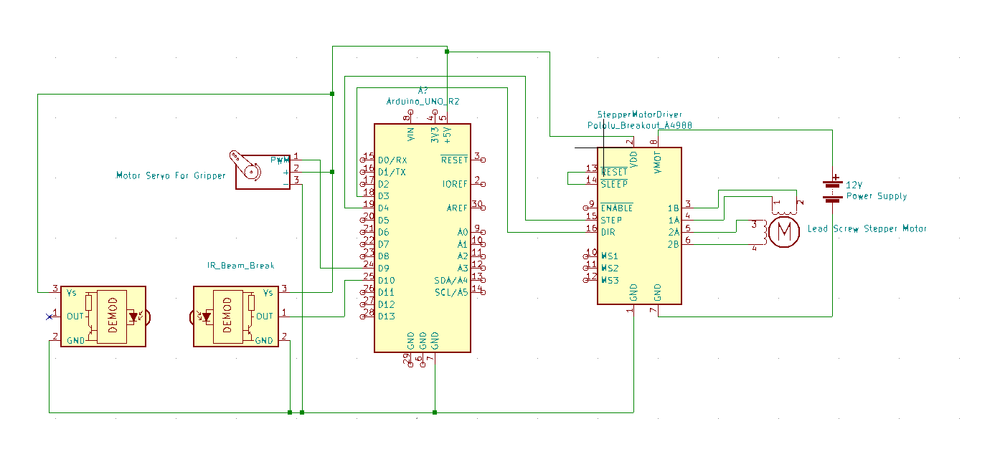

Electrical Subsystem
DeskBot can be divided into 2 main subsystems that are controlled by circuits: H-Bot Gantry Circuit and Gripper and Z Axis Gantry Circuit
H-Bot Gantry Circuit
H-Bot Gantry Component Details
- Arduino: This is the microcontroller used to control the inputs and outputs of the electrical system.
- Stepper Motor (x2): We used NEMA 17 stepper motors with a holding torque of approximately 0.33 Nm and rated current of 1A. The holding torque of the stepper motors for this system must be around or above 0.33Nm, otherwise they cannot properly drive the system. They are driven and controlled by A4988 Stepper Motor Drivers.
- A4988 Stepper Motor Drivers (x2): The A4988 Stepper Motor Driver allows us to control the direction and steps of each stepper motor through an Arduino. The drivers can supply up to 2A of current to the stepper motor driver, thus to protect the stepper motors we adjusted them to output 0.875A, which runs the stepper motors at approximately 87.5% of its total force.
- Limit Switches (x4): These limit switches are put on each end of the H-Bot system (-x, +x, -y, +y) to detect collisions and stop the stepper motors from moving. Having the C pin grounded, NO pin connected to a digital pin on the Arduino and the NC pin not connected, sets the limit switch to high when untouched and low when touched.
- Power Supply: We used a 12V barrel jack power supply, however any power supply from the range of 8-35V may be used to drive this system, although the A4988 drivers may need to be re-adjusted.
Gripper and Z Axis Gantry Circuit
Gripper and Z Axis Gantry Component Details
- Arduino: This is the microcontroller used to control the inputs and outputs of the electrical system. This Arduino is different from the one used in the H-Bot Gantry System.
- Stepper Motor with Lead Screw: This NEMA 17 stepper motor has a lead screw attached allowing for the gripper to be moved up and down. The rated current for this motor is greater, at 1.5A, than the other stepper motors in DeskBot.
- A4988 Stepper Motor Drivers: We use the same type of chip as in the H-Bot. However, instead of calibrating it to 0.875A, we adjusted the driver to 1.2A. This provides the lead screw enough current to move the gripper up and down significantly, while still protecting it from voltage spikes.
- Servo: The servo is attached to the gripper and allows it to open and close with significant force.
- IR Beam Break: The beam break sensors are placed on the inside of the gripper to determine if the gripper is going to grab an object.
- Power Supply: We used the same 12V barrel jack power supply used in the H-Bot Circuit